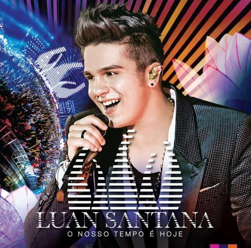

Luan Santana é um cantor e compositor sertanejo brasileiro, nascido em 13 de março de 1991, em Campo Grande, Mato Grosso do Sul. Desde criança, com um violão presenteado pelo pai, mostrou talento musical, o que o levou a apresentações locais. Em 2007, fez sua primeira apresentação pública, e em 2008, com a música "Meteoro", sua carreira decolou nacionalmente, culminando em sucessos estrondosos, como o álbum "Tô de Cara". Reconhecido nas redes sociais e na TV, Luan acumulou uma extensa discografia, turnês internacionais e diversas parcerias musicais. Sua carreira inclui também atuações como apresentador de TV e participações em novelas.
